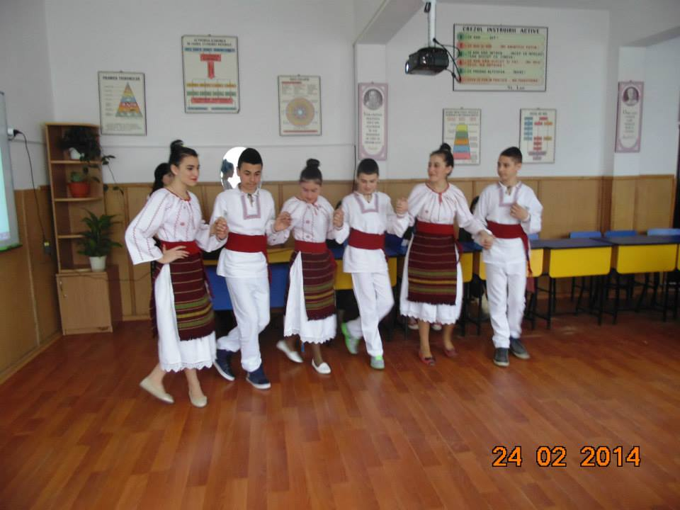
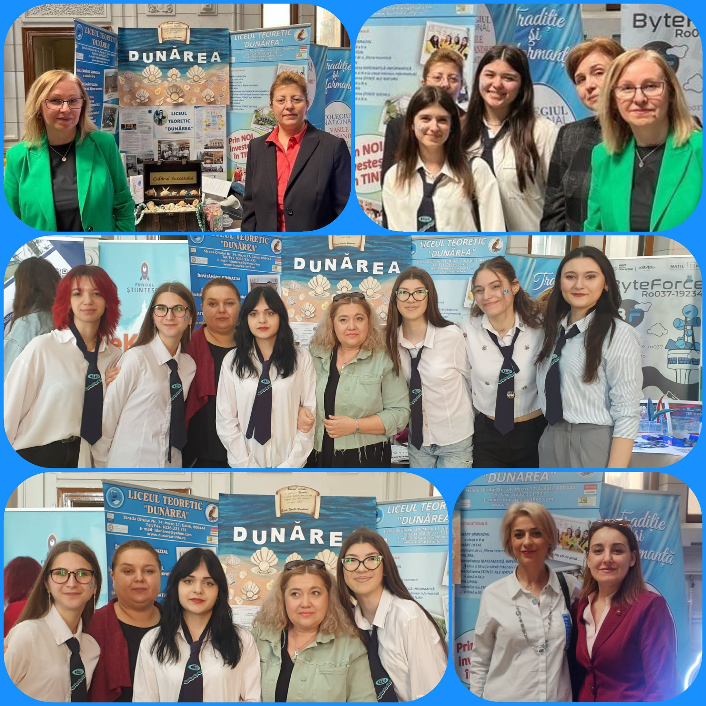

Istoric, misiune, viziune și oamenii care conduc școala noastră.
Liceul Teoretic „Dunărea” Galați este un așezământ de educație și cultură. Prin filieră și profil, acest liceu face parte din categoria liceelor teoretice din județul Galați, descriind o curbă ascendentă în ceea ce privește calitatea demersului didactic și deschiderea spre multiculturalitate, prin Curriculum la Decizia Școlii (C.D.Ș.), parteneriate naționale și europene.
Liceul a fost înființat în anul 1992, având filiera teoretică. În prezent funcționează cu clase de profil uman (specializarea științe sociale) și clase de profil real (specializările matematică-informatică / intensiv informatică și științe ale naturii).

Liceul Teoretic „Dunărea” Galați are misiunea de a forma generații de elevi prin dezvoltarea capacităților intelectuale (științifice, umaniste și estetice) și a competențelor-cheie — în special în domeniul tehnologiei informației și comunicațiilor. Educăm elevii în spiritul valorilor europene (democrație, toleranță, egalitate de șanse), pentru a deveni cetățeni informați, responsabili și activi, capabili să se integreze socio-profesional pe o piață a muncii aflată în continuă schimbare.
Urmărim ca, prin oferta educațională, să furnizăm un învățământ de calitate, bazat pe competențe și valori europene, utilizând adecvat resursele umane și materiale ale școlii, în colaborare cu partenerii sociali. Ne dorim să fim o componentă de bază a pieței educaționale a județului Galați și să oferim absolvenților noștri oportunitatea de integrare în viața socio-profesională, ca cetățeni europeni.
Director
Director adjunct
Consilier educativ

De peste trei decenii, credem cu tărie că toți elevii noștri sunt valoroși și că au dreptul la educație de calitate. La bord, profesorii noștri sunt pașaportul tău spre succes.